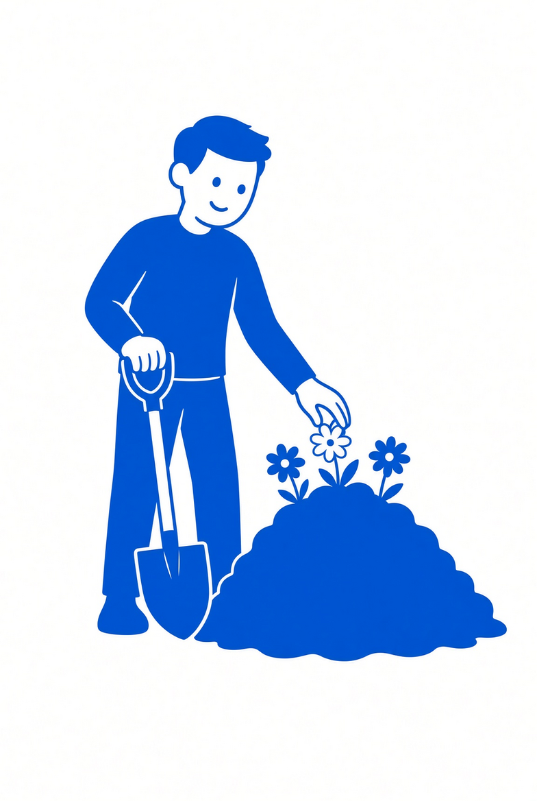
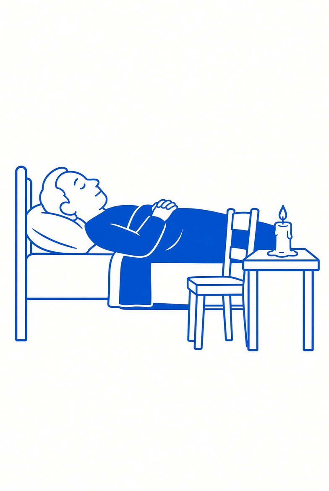
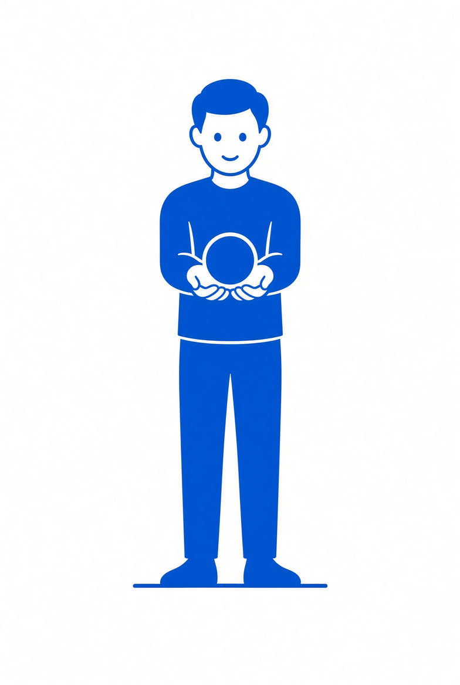
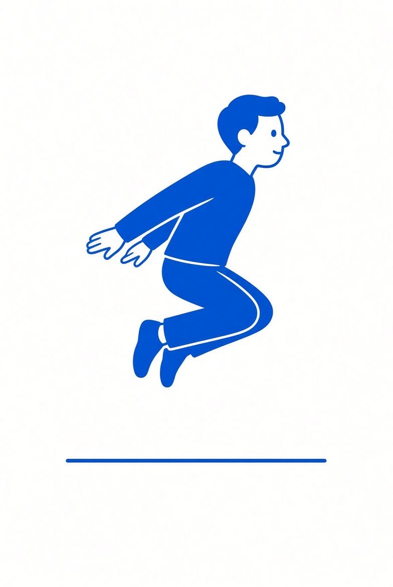
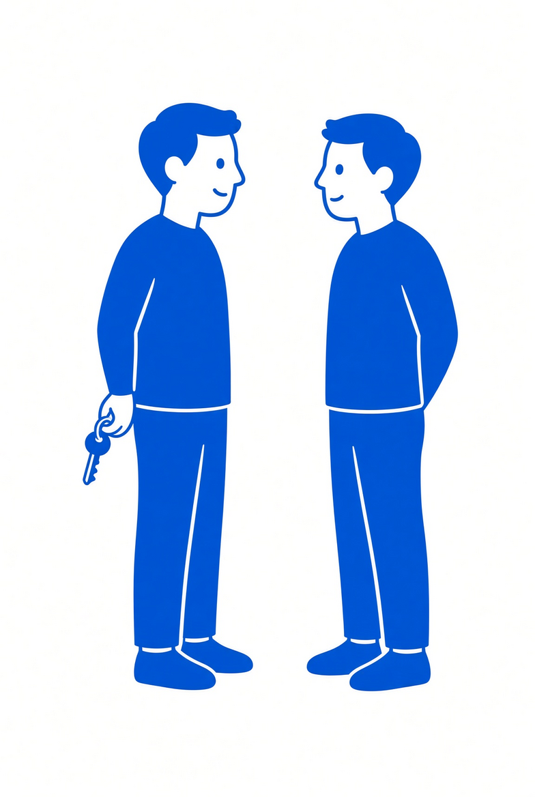
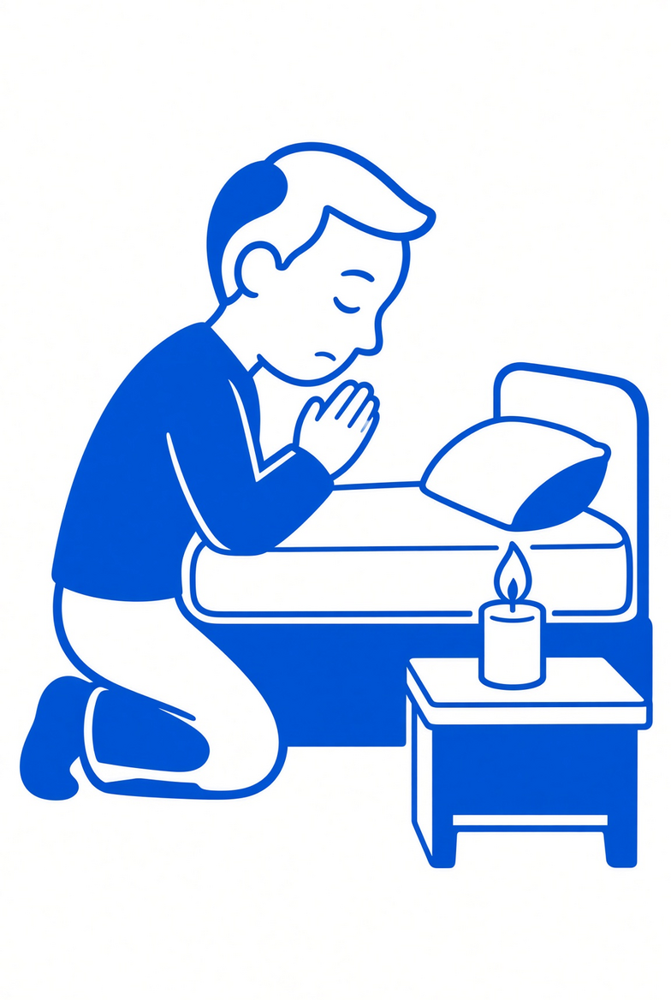
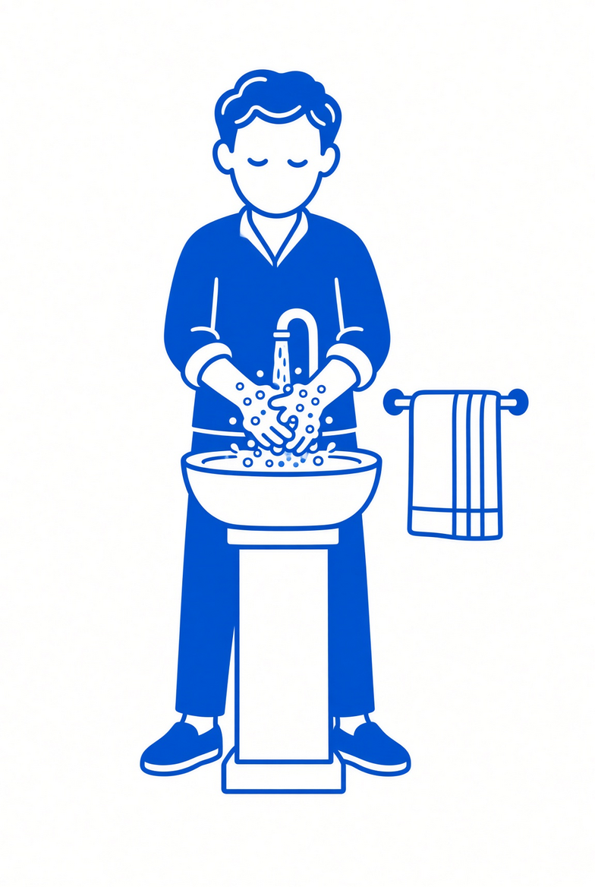

vechten
to fight
onregelmatigrang 1077Abstract & generalgetekend
vochtheeft gevochten
- Scene
- two children stand an arm's length apart in a bare schoolyard, each facing the other with both fists raised and elbows tucked in, one boy already throwing a fist forward so the other leans back out of reach; feet apart and knees bent, mouths open and furious.
- Must read
- a fist thrown by one child while the other pulls back.
- Avoid
- one fist held up alone with a flexed arm (kunnen); a girl lying on the ground and covering her face (vallen); two hands both closed on one long rope (trekken); two children holding hands and smiling (helpen); sticks, knives or any weapon (dreigen).
- Alt text
- Twee kinderen staan tegenover elkaar; een van hen haalt uit met de vuist, het ander leunt achteruit.
vechten.png · rang 1077 · A2 onregelmatig · lexicon woorden.tsv

hangen
to hang
onregelmatigrang 1094Abstract & generalgetekend
hingheeft gehangen
- Scene
- one adult stands on a low stool in a bare room and hooks a coat by its loop onto a nail high on a plain wall with one hand; the coat already takes its weight on the nail and the hand is just letting go, both feet on the stool.
- Must read
- a coat taking its weight on a nail as the hand lets go.
- Avoid
- one adult flat on their back on a bed (liggen); a person upright beside a bicycle (staan); clothes folded in a neat pile (leggen); a framed picture on the wall (bekijken); a hook with nothing on it.
- Alt text
- Een volwassene op een krukje schuift met een hand een jas over een spijker hoog aan de muur.
hangen.png · rang 1094 · A2 onregelmatig · lexicon woorden.tsv

steken
to stick (in)
onregelmatigrang 1133Movement & positiongetekend
stakheeft gestoken
- Scene
- one adult stands at a kitchen counter, full figure head to feet, holding a long thin wooden skewer horizontally in both hands; four large vegetable chunks are already threaded on it and the sharp point sticks out past the last chunk. No knife, no chopping board.
- Must read
- a long skewer with vegetable chunks threaded on it and the point sticking out.
- Avoid
- a knife cutting through a carrot (snijden); a needle taken through cloth (naaien); a fork lifted to the mouth (eten); a key turning in a door (wonen); a spade in the ground (graven).
- Alt text
- Iemand staat aan het aanrecht en houdt met beide handen een lange houten prikker vast met grote stukken groente erop; de scherpe punt komt aan het eind uit.
steken.png · rang 1133 · A2 onregelmatig · lexicon woorden.tsv

begraven
to bury
onregelmatigrang 1178Abstract & generalgetekend
begroefheeft begraven
- Scene
- one adult stands beside a fresh mound of turned earth in a small garden, full figure head to feet with the feet visible, a spade in one hand with its blade on the ground, and with the other hand lays a few cut flowers flat on top of the mound. No marker, no hole, no body.
- Must read
- a fresh mound of earth with cut flowers being laid on it.
- Avoid
- a small tree pressed into a garden hole (planten); a spade lifting soil out of a trench (graven); a gravestone or any marker; three people with heads bowed; a person kneeling to look under a sofa (zoeken).
- Alt text
- Iemand staat met een schop bij een verse hoop aarde en legt er een paar bloemen op.
begraven.png · rang 1178 · A2 onregelmatig · lexicon woorden.tsv

wegen
to weigh
onregelmatigrang 1202Abstract & generalgetekend
woogheeft gewogen
- Scene
- one adult stands at a kitchen counter with a small kitchen scale in front of them, a paper bag of apples resting in its flat pan, the needle of the dial swung round to the right; one hand still steadies the bag and the eyes are on the dial.
- Must read
- a filled bag pulling the needle of a kitchen scale round.
- Avoid
- a hand under the chin and eyes rolled up (denken); two pans on a balance (rechtspreken); a market trader with a note (kopen); a tape measure or a ruler (meten).
- Alt text
- Een volwassene zet een volle zak appels op een keukentoestel met een wijzer en kijkt naar die wijzer.
wegen.png · rang 1202 · A2 onregelmatig · lexicon woorden.tsv

roepen
to call (out)
onregelmatigrang 1266Communication & languagegetekend
riepheeft geroepen
- Scene
- one adult stands in the middle of an empty street with both hands cupped round the mouth, mouth wide open and eyes on a distant figure at the far end of the street, who is already turning round; between them the street is bare, no letter or word in the air.
- Must read
- two cupped hands round an open mouth calling to a far figure.
- Avoid
- two people close together with speech bubbles (praten); a telephone held to one ear (bellen); one hand flat beside the mouth with a whisper (fluisteren); a raised arm shaking a fist (vechten); a horn or a bell (luiden).
- Alt text
- Een volwassene heeft beide handen aan de open mond, gericht naar iemand die ver weg op straat omkijkt.
roepen.png · rang 1266 · A2 onregelmatig · lexicon woorden.tsv

sterven
to die
onregelmatigrang 1269Body & healthgetekend
stierfis gestorven
- Scene
- one very old adult lies on a bed seen from the side, full figure, with both eyes closed and both hands folded on the blanket, face calm and still, mouth one short horizontal line with no upturned corners (not a smile); a plain wooden chair stands empty beside the bed on the viewer's side, between the bed and the side table, and on the side table a short candle stub with melted wax pooled at its base burns with one tiny flame.
- Must read
- an old person lying still with folded hands and a burned-down candle.
- Avoid
- both hands pressed on one chest (zijn); hands held up towards the sky beside a bed (bidden); a person asleep with a snore mark (slapen); a doctor beside a bed with a clipboard (onderzoeken); a cross or a headstone (begraven).
- Alt text
- Een heel oude mens ligt met gevouwen handen op bed; naast het bed brandt een kaarsje bijna op.
sterven.png · rang 1269 · A2 onregelmatig · lexicon woorden.tsv

verdwijnen
to disappear
onregelmatigrang 1301Abstract & generalgetekend
verdweenis verdwenen
- Scene
- one adult stands still on a bare floor, seen from the side, full figure head to feet with white margin. The head, chest and arms are drawn solid cobalt; from the waist down the body turns into a thin dashed contour line (plain dashes, no dots, no dot-fill, no gradient) that thins out to nothing at the feet, so the legs and feet are nearly gone. Only the figure; no door, no field, no other object, no symbol.
- Must read
- a standing person whose lower body fades away into a dashed outline.
- Avoid
- a person stepping through a doorway (verlaten); an empty pair of shoes left behind (vergeten); a dove or a ball leaving a hat (toverslaan); a person with an eye to a microscope (onderzoeken); smoke from a fire (branden).
- Alt text
- Iemand staat stil; vanaf het middel naar beneden lost het lichaam op in een stippellijn die bij de voeten bijna weg is.
verdwijnen.png · rang 1301 · A2 onregelmatig · lexicon woorden.tsv

zwemmen
to swim
onregelmatigrang 1332Sport & gamesgetekend
zwomheeft/is gezwommen
- Scene
- one adult is seen from the side swimming in a pool: a bold pool edge and a wavy water-surface line are drawn, the body lies nearly horizontal just under the surface line with the head and one arm stretched forward out of the water, the other arm sweeping back, both legs kicking behind under the surface, goggles on and eyes ahead. Not a dive and not a leap.
- Must read
- an arm stretched forward over the water with the head up.
- Avoid
- a body already entering the water head first with both arms ahead (duiken); feet at the shallow end and a hand on the ladder (stappen); a board under both hands (drijven); a towel and a deckchair on the tiles (liggen); a boat or a sail (varen).
- Contrast
- Pair with duiken. Same pool and the same swimmer: the head is already up with one arm forward here, the body arcs into the water from above there.
- Alt text
- Iemand in het bad steekt een arm vooruit boven het water, terwijl de benen achter hem trappelen.
zwemmen.png · rang 1332 · A2 onregelmatig · lexicon woorden.tsv

bewegen
to move
onregelmatigrang 1381Movement & positiongetekend
bewoogheeft bewogen
- Scene
- one adult stands in a bare room with both arms swept out wide to the sides and one leg lifted half off the floor, caught mid-swing; short repeated curved strokes trail in the air behind the arms and behind the lifted foot and nowhere else in the frame.
- Must read
- an arm swung wide beside a foot leaving the floor.
- Avoid
- the front foot flat and the back foot just lifted, arms swinging in opposition (lopen); a person standing straight with arms along the body (staan); a body flat on a bed with eyes open (liggen); a still statue on a plinth (staan); a marching band (marcheren).
- Alt text
- Iemand staat met de armen wijd in een lege kamer, een been van de vloer, korte strepen achter de armen.
bewegen.png · rang 1381 · A2 onregelmatig · lexicon woorden.tsv

vertrekken
to depart
onregelmatigrang 1399Movement & positiongetekend
vertrokis vertrokken
- Scene
- one adult with a suitcase in one hand stands at the right edge of the frame, seen from behind, with the front foot already over the threshold of an open doorway, head turned away towards the empty road outside. A second adult stands still inside the room at the left, empty-handed, facing the back of the first.
- Must read
- one adult with a suitcase already stepping out through a doorway.
- Avoid
- one adult alone with arms swinging towards a shut door (gaan); a bicycle rolled out of a shed onto a street (fietsen); a fist raised against a second person (aanvallen); a hand raised flat on a door to shut it (sluiten); a train on a platform.
- Alt text
- Iemand met een koffer stapt door de open deur naar buiten; binnen blijft een ander staan.
vertrekken.png · rang 1399 · A2 onregelmatig · lexicon woorden.tsv

wijzen
to point
onregelmatigrang 1450Movement & positiongetekend
weesheeft gewezen
- Scene
- one adult stands beside a second adult and stretches one arm out straight towards a fire extinguisher fixed to the far wall, the index finger level with it, head turned the same way; the second adult, a step behind and to the side, follows the line of the pointing arm with their eyes.
- Must read
- an outstretched arm with one finger aimed at a wall object.
- Avoid
- an open flat palm held towards a person by a door (mogen); a hand held flat beside the temple to shade the eyes (kijken); a finger raised straight up beside an open mouth (roepen); a hand round a pencil on paper (schrijven); an arrow on a sign (leiden).
- Alt text
- Een volwassene strekt de arm met een gestrekte vinger naar een brandblusser aan de muur, terwijl een tweede persoon meekijkt.
wijzen.png · rang 1450 · A2 onregelmatig · lexicon woorden.tsv

vangen
to catch
onregelmatigrang 1670Movement & positiongetekend
vingheeft gevangen
- Scene
- one adult stands facing the viewer on a beach, full figure head to feet with a short ground line under the feet, both palms facing up with the fingers curled and the hands touching side by side a metre in front of the chest, a small round ball sitting inside the cupped hands and touching both palms (not above them), eyes on the ball; both feet stay planted flat on the sand.
- Must read
- a ball caught between two cupped hands on flat feet.
- Avoid
- one hand closing on a mug and lifting it off a shelf (pakken); a hand gripping another person by the wrist (redden); an outstretched arm with an open empty palm (vragen); a ball bouncing off the fingertips (spelen); a dog running after a stick (gooien).
- Contrast
- Pair with gooien. Same ball at the same height: it sits between two cupped hands here, it has just left one raised hand there.
- Alt text
- Iemand staat op het strand met de handen hol voor de borst, en de bal landt net tussen de handpalmen.
vangen.png · rang 1670 · A2 onregelmatig · lexicon woorden.tsv

breken
to break
onregelmatigrang 1698Abstract & generalgetekend
brakheeft gebroken
- Scene
- one adult stands with both hands resting on the top of a long flat wooden plank held out in front, the two halves already dropping away from each other at a jagged line at its middle, a few short splinters in the air; the eyes are down on the break. Everything is cobalt outline only: the plank is a plain blank white bar with a bold cobalt outline, with no ticks, numbers, lines or notches anywhere on it, even along its edges; the splinters are short cobalt strokes; no beige, tan or wood-coloured fill.
- Must read
- a long plank snapping in two under two hands.
- Avoid
- a mug already in pieces on the floor (vallen); a screwdriver in a screw (gebruiken); a hammer and a nail (maken); a hand patting a torn cloth (repareren); a wall of bricks on the ground (bouwen).
- Alt text
- Iemand houdt twee handen op een lange lat die in het midden knapt, met splinters in de lucht.
breken.png · rang 1698 · A2 onregelmatig · lexicon woorden.tsv

springen
to jump
onregelmatigrang 1722Movement & positiongetekend
sprongheeft/is gesprongen
- Scene
- one adult is caught in mid-air over bare ground, seen from the side, full figure, torso upright and leaning slightly forward, thighs forward with the shins tucked up under the body, both arms swung back behind; a clear ground line is drawn well below the feet, the feet well clear of the ground and the figure fully detached from it, eyes on something ahead of the landing spot.
- Must read
- a whole person in the air with both feet well above the ground.
- Avoid
- the front foot flat and the back on its toes with arms swinging (lopen); a body tipping sideways with both arms flung out (vallen); two adults hopping in a line (dansen); a swimmer over a pool (duiken); a trampoline (stuiteren); a shadow on the ground (vallen).
- Contrast
- Pair with vallen. Same adult off the ground: the knees come up under the body here, the body tips forward with the arms flung out there.
- Alt text
- Iemand is met opgetrokken knieen in de lucht, de voeten hoog boven de grond en de armen naar achteren.
springen.png · rang 1722 · A2 onregelmatig · lexicon woorden.tsv

vergelijken
to compare
onregelmatigrang 1774Thought & knowledgegetekend
vergeleekheeft vergeleken
- Scene
- one adult stands at a table between two apples that sit an arm's length apart and slowly turns the head from the left apple to the right; a hand is held above each apple, each hand horizontal with the palm facing down like a lid and the fingers pointing forward, hovering a thumb's width over its apple, not vertical and not palm-out; the two hands are held at exactly the same height above the two apples.
- Must read
- two hands held level above two separate apples.
- Avoid
- one hand hovering above one of two jars (kiezen); a face card held above a head (kennen); two pans on a balance (wegen); a person with an eye to a microscope (onderzoeken); a price tag on either apple (kopen).
- Alt text
- Een volwassene kijkt van de ene appel naar de andere en houdt beide handen op precies dezelfde hoogte erboven.
vergelijken.png · rang 1774 · A2 onregelmatig · lexicon woorden.tsv

verbergen
to hide
onregelmatigrang 1899Abstract & generalgetekend
verborgheeft verborgen
- Scene
- one adult stands facing a second adult and holds one hand behind the back, the fingers closed round a small key that the second adult cannot see; the free hand rests at the side and the face is calm.
- Must read
- an object held out of sight behind the back.
- Avoid
- a back pressed against a door (zich verstoppen); a hand reaching under a cushion (zoeken); a key held out to a second person (geven); both hands over the eyes (spelen).
- Alt text
- Iemand staat tegenover een ander en houdt een sleutel achter de rug.
verbergen.png · rang 1899 · A2 onregelmatig · lexicon woorden.tsv

zwijgen
to be silent
onregelmatigrang 2020Communication & languagegetekend
zweegheeft gezwegen
- Scene
- one adult sits at a plain table facing a second adult across it, full figure, mouth shut, with the index finger lying horizontally across both closed lips, the fingertip reaching the opposite cheek, the finger crossing the mouth and not pointing up beside the face; eyes level and steady. The other adult has an open mouth and both hands lifted, and no speech bubble touches the silent one.
- Must read
- a finger laid across closed lips at a shared table.
- Avoid
- two people close together with speech bubbles (praten); a mouth wide open and two cupped hands (roepen); a telephone held to one ear (bellen); a hand raised flat for silence (waarschuwen); a crossed-out mouth (weigeren).
- Contrast
- Pair with spreken. Same adult: a finger lies across closed lips here, the mouth is open with a bubble above the head there.
- Alt text
- Iemand legt een vinger overdwars op de lippen, terwijl de persoon aan de overkant van tafel net iets wil zeggen.
zwijgen.png · rang 2020 · A2 onregelmatig · lexicon woorden.tsv

bidden
to pray
onregelmatigrang 2065Religion & beliefgetekend
badheeft gebeden
- Scene
- one adult kneels beside a bed with both elbows resting on the mattress edge and both hands pressed palm to palm under the chin, eyes closed and head bowed; a short plain candle with a small flame burns on the bedside table and nothing else is in the room.
- Must read
- two palms pressed together under a bowed head.
- Avoid
- two hands clasped beneath a small umbrella (hopen); a person on a chair with the chin on a fist (denken); a figure seated before a computer (werken); a stained cross, a mosque or a church window (geloven); a rosary with beads.
- Alt text
- Een volwassene knielt bij een bed met de handen tegen elkaar onder de kin, ogen dicht, naast een kaars.
bidden.png · rang 2065 · A2 onregelmatig · lexicon woorden.tsv

varen
to sail (a boat, a ferry)
onregelmatigrang 2238Transport & travelgetekend
voerheeft/is gevaren
- Scene
- a small car ferry crosses a wide river, seen from the side, with a low bow wave and a curl of wake behind; one adult stands at the rail on deck looking across the water to the far bank. No sail and no flag.
- Must read
- a ferry under way on a river with a wake behind.
- Avoid
- a sail curved by the wind (zeilen); a rower with both oars in the water (roeien); a swimmer (zwemmen); a boat tied up at a jetty (aanmeren); a person on a bridge over the river (lopen).
- Alt text
- Een veerpont steekt een brede rivier over; iemand staat aan de reling en kijkt naar de overkant.
varen.png · rang 2238 · A2 onregelmatig · lexicon woorden.tsv

duiken
to dive
onregelmatigrang 2397Sport & gamesgetekend
dookheeft/is gedoken
- Scene
- one adult is caught just above the water of a swimming pool in an arched dive, seen from the side, full figure: the head and arms point straight down with the fingertips one hand's width above the water and not yet touching it, both knees visibly bent with the shins folded up so the feet are the highest point. The water is only a plain wavy surface line; no slab, edge, board or platform anywhere.
- Must read
- fingertips a hand's width above the water, feet highest.
- Avoid
- an arm stretched forward over the water with the head up (zwemmen); a foot on the pool ladder (stappen); a body already under the surface (zwemmen); a board under both hands (drijven); a boat with sails (varen); a springboard with a crowd (springen).
- Contrast
- Pair with zwemmen. Same pool and the same swimmer: the body arcs into the water from above here, the head is already up with one arm forward there.
- Alt text
- Een zwemmer is in een boog boven het water: de handen gaan recht naar beneden en de voeten staan hoog.
duiken.png · rang 2397 · A2 onregelmatig · lexicon woorden.tsv

wassen
to wash
onregelmatigrang 2468Body & healthgetekend
wasteheeft gewassen
- Scene
- one adult stands at a low washbasin on a pedestal, full figure from head to feet with the legs and feet visible below the basin, and rubs both palms together centred directly under the tap: the spout is directly above the rubbing hands and the whole stream falls from the spout straight onto the hands (one stream only, not beside them); soapsuds up the wrists and a few drops on the basin rim; the eyes are down on the hands and a small towel hangs on a rail beside the basin.
- Must read
- both hands rubbed together under a running tap.
- Avoid
- a shower head over a head (douchen); a hand scrubbing a plate under a tap (afwassen); a body standing in a bath tub (baden); a washing machine with its door open (de was doen); a hand on a tap handle (draaien).
- Alt text
- Iemand wrijft de handen met zeep onder een lopende kraan, met de ogen op de handen en een handdoek ernaast.
wassen.png · rang 2468 · A2 onregelmatig · lexicon woorden.tsv